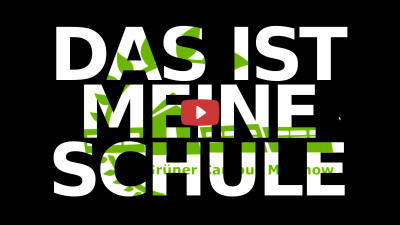

**Tag der offenen Tür am Grünen Campus Malchow 2021**
Stand: 14.01.2021
# Willkommen
Aufgrund der Pandemie ist ein richtiger Tag der offenen Tür 2021 nicht möglich. Wir zeigen also auf diesem Weg, was unsere Schule ausmacht. Wir freuen uns auf Dich und auf Sie.
Stellen Sie Fragen über info@gruener-campus-malchow.de
# Video

Der nicht ganz 20-minütige Film ist auf unserem [Youtube-Kanal](https://www.youtube.com/c/gcmvideo) verfügbar.
# Informationen
## WPU-Kurse 2020
Die folgende Liste umfasst die Kurse aus dem Vorjahr.
* Item
* Item
* Item
* Item
* Item
* Item
* Item
* Item
## AGs
Die Folgende Tabelle umfasst die Kurse aus dem Vorjahr.
## Oberstufenangebot
[PDF zum Download](./files/oberstufenangebot_gruener-campus-malchow_2021.pdf)
>